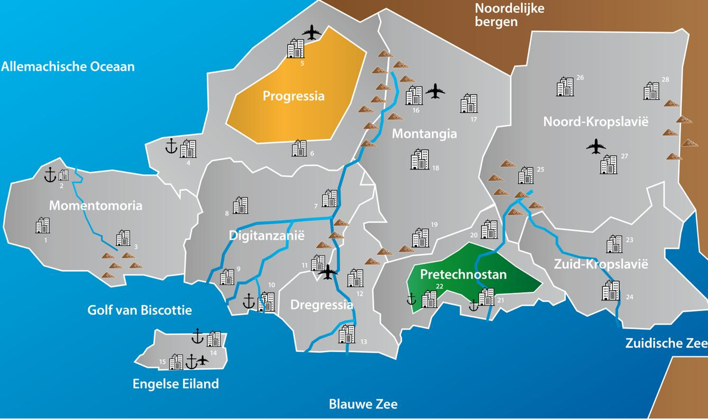

- Gezonde bevolking: 19362815
- Besmette bevolking: 0
- Gemuteerde bevolking: 0
Timer

Hamsterwoede!
Met oplopende Olifantengriepcijfers op de horizon zijn inwoners Deze zouden helpen de Olifantengriep uit de neus te houden en daarmee een infectie te voorkomen. De regering van Engelse Eiland verzoekt haar burgers dringend om te stoppen met hamsteren, en verzekert hen ervan dat de voorraden groot genoeg zijn om iedereen te kunnen bedienen. Over de effectiviteit van het tampongebruik als preventie van de Olifantengriep zijn door experts nog geen uitspraken gedaan. In Digitanzanië beginnen de eerste geluiden al op te gaan om spullen in te slaan. Wat moet de overheid doen?